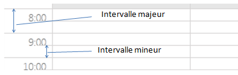

L'objet agenda propose deux échelles de temps, définissant respectivement un intervalle "majeur" et un intervalle "mineur" :

Les intervalles autorisés sont les suivants :
Intervalle mineur : 15', 30', 1h, 2h (30' par défaut).
Intervalle majeur : 1h, 2h, 3h, 6h (1h par défaut).
Le changement d'intervalle s'obtient par le positionnement d'une option de l'agenda.